Smash
These instructions will take you through the steps of creating a game that uses the 1976 game Breakout as its inspiration.
You will control a paddle along the bottom of the screen to bounce balls at the grid of blocks across the top of the screen. Each time you clear all of the blocks, you will be given another life and advance a level to do it all again.
The ball passes through some blocks and bounces on others. When destroyed, Some blocks drop a bonus that will be either more lives, a bigger paddle or slow the ball down.
How many levels can you complete?
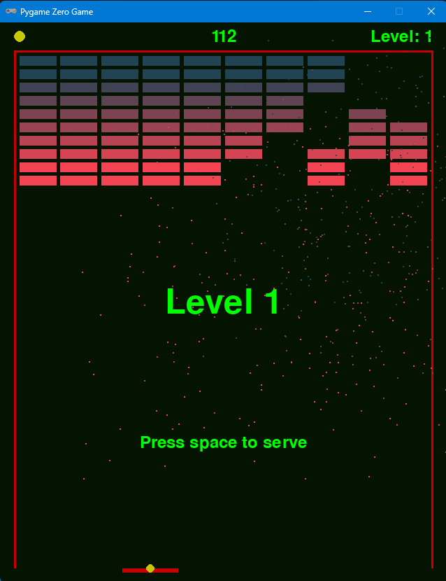
Learning points
These instructions will take you through the process of creating a game which does not use Actors for sprites. Instead, the game is implemented using drawing primitives such as rectangles, circles and individual pixels. Python Classes are used to implement the game objects with these primitives, showing the flexibility that is on offer.
These instructions are suitable for you if you are comfortable with basic Python coding.
Step 0: Create the project in Replit
Navigate to Replit and login.
Create a new project using the Pygame template and give it the title "Smash" as illustrated by the screenshot below.
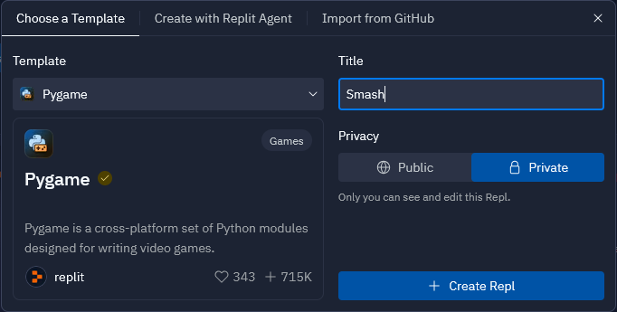
In the main.py file, replace the code provided with the code below and run the program
to make sure it can download the packages and runs. You should be presented with a greenish
black screen. You can change the colour of the background by modifying the value of the
BACKGROUND_COLOUR variable. Colours are specified with 3 values that represent the red,
green and blue components of the colour. Each component value can be between 0 and 255.
The screen area of the game can be adjusted by changing the values of the WIDTH and
HEIGHT variables. After clearing the screen, the draw() function loops over the list
draw_funcs. In later steps we will be adding functions to this list to draw the elements
on the screen. The advantage of this technique is that the draw() function will not need
to modified in those later steps. We do a similar technique for the update() function.
Experiment to find the colours and screen size that you like the most.
import os
import random
from copy import copy
from random import randint
import pgzrun
from pgzero.clock import Clock
from pgzero.keyboard import Keyboard
from pgzero.rect import Rect
from pgzero.screen import Screen
WIDTH = 600
HEIGHT = 640
screen: Screen
keyboard: Keyboard
clock: Clock
BACKGROUND_COLOUR = (5, 20, 0)
draw_funcs = []
def draw():
screen.fill(BACKGROUND_COLOUR)
for draw_func in draw_funcs:
draw_func(screen.draw)
update_funcs = []
def update(dt):
for update_func in update_funcs:
update_func(dt)
pgzrun.go()
Step 1: Setup score, level, border and lives
The completed code for this step is available here.
Now we are going to draw the score, level, border and lives on the screen. We
will create functions to draw each of the separate elements. Each section of
code can be added and tested individually. Place the following code before the
call to pgzrun.go(). Run your game after you have added each section and you
should see each section as it gets added.
Add the score
HEADER_HEIGHT = 40
FOOTER_HEIGHT = 20
MARGIN_WIDTH = 20
SCORE_COLOUR = (0, 255, 0)
score = 0
def draw_score(draw):
draw.text(f"{score}",
center=(WIDTH / 2, HEADER_HEIGHT / 2),
color=SCORE_COLOUR,
fontsize=36)
draw_funcs.append(draw_score)
Add the level
LEVEL_COLOUR = (0, 255, 0)
level = 1
def draw_level(draw):
draw.text(f"Level: {level}",
right=(WIDTH - MARGIN_WIDTH),
centery=HEADER_HEIGHT / 2,
color=LEVEL_COLOUR,
fontsize=36)
draw_funcs.append(draw_level)
Add the border
BORDER_COLOUR = (200, 0, 0)
BORDER_WIDTH = 3
def draw_border(draw):
left = MARGIN_WIDTH
top = HEADER_HEIGHT
width = WIDTH - (2 * MARGIN_WIDTH)
height = HEIGHT - HEADER_HEIGHT - FOOTER_HEIGHT
draw.filled_rect(Rect(left, top, width, height), BORDER_COLOUR)
left += BORDER_WIDTH
top += BORDER_WIDTH
width -= (2 * BORDER_WIDTH)
draw.filled_rect(Rect(left, top, width, height), BACKGROUND_COLOUR)
draw_funcs.append(draw_border)
Add the lives
LIVES_COLOUR = (200, 200, 0)
LIVES_RADIUS = 8
LIVES_SPACING = 5
STARTING_LIVES = 3
lives = STARTING_LIVES
def draw_lives(draw):
for i in range(lives):
x = MARGIN_WIDTH + LIVES_RADIUS + (i * (
(2 * LIVES_RADIUS) + LIVES_SPACING))
y = HEADER_HEIGHT / 2
draw.filled_circle((x, y), LIVES_RADIUS, LIVES_COLOUR)
draw_funcs.append(draw_lives)
Run your game and make sure it works; it should look like the screen shot below.
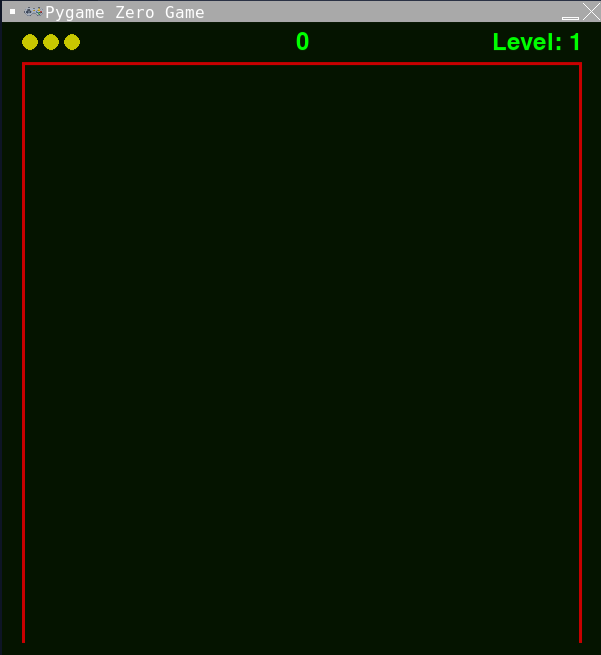
Experiment: Changing the look of the game
The look of the game is controlled by the 10 variables that are in UPPERCASE at the start of the code you have just added. The names of the variables should be reasonably self explanatory. Experiment with different values for some of the variables and see how it changes the screen. Inspect the code to work out how the code achieves the effects.
Some good values to experiment with:
HEADER_HEIGHT: 20, 40, 100, 200FOOTER_HEIGHT: 10, 20, 40, 100MARGIN_WIDTH: 10, 20, 40, 100BORDER_WIDTH: 1, 3, 6, 20, 40LIVES_RADIUS: 1, 3, 8, 12, 20, 50LIVES_SPACING: -3, 0, 5, 10, 20
Experiment with changing the colours to find some you like. As with the background, colours are specified with 3 values that represent the red, green and blue components of the colour. Each component value can be between 0 and 255.
Step 2: Paddle and movement
The completed code for this step is available here.
In this step, the paddle which can be moved across the bottom of the screen using the
left and right arrow keys will be added. A Class called Paddle will be created to
control how the paddle is draw and controlled. The following methods of the Paddle
Class are worthy of a little more explanation.
bounding_box()- This returns aRectinstance that represents the space occupied by the paddle. This is used later for collision detection.draw()- This draws the paddle on the suppliedSurfacePainterobject.update()- This is called to update the position of the paddle. As well as moving the paddle in response to keypresses, it keeps the paddle in bounds.
Place the following code before the call to pgzrun.go().
PADDLE_COLOUR = (200, 0, 0)
PADDLE_WIDTH = 80
PADDLE_HEIGHT = 6
PADDLE_SPEED = 400
class Paddle:
def __init__(self, pos):
self.position = pos
self.width = PADDLE_WIDTH
self.height = PADDLE_HEIGHT
self.colour = PADDLE_COLOUR
# This is the speed the paddle can go left and right in pixels per second
self.vx = PADDLE_SPEED
# These are the bounds that the paddles box must stay within
self.min_x = MARGIN_WIDTH + (PADDLE_WIDTH / 2)
self.max_x = WIDTH - MARGIN_WIDTH - (PADDLE_WIDTH / 2)
@property
def bounding_box(self):
half_width = int(self.width / 2)
return Rect((self.x - half_width, self.y), (self.width, self.height))
@property
def position(self):
return self.x, self.y
@position.setter
def position(self, pos):
self.x = pos[0]
self.y = pos[1]
def draw(self, draw):
draw.filled_rect(self.bounding_box, self.colour)
def update(self, dt):
if keyboard.left:
self.x -= self.vx * dt
if keyboard.right:
self.x += self.vx * dt
# Now keep it in bounds
if self.x < self.min_x:
self.x = self.min_x
elif self.x > self.max_x:
self.x = self.max_x
paddle = Paddle((WIDTH / 2, HEIGHT - FOOTER_HEIGHT))
If you run your game now, the paddle will not be displayed and will not respond to
keypresses. This is because the paddle has not yet been hooked into the main game
loops to call the paddles update() and draw() methods. Add the following
update() function.
draw_funcs.append(paddle.draw)
update_funcs.append(paddle.update)
Run your game and make sure it works; it should look like the screen shot below. Pressing the left and right keys will move the paddle left and right.
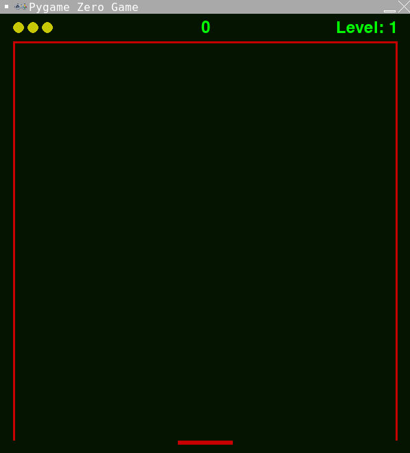
Experiment: Changing the look and speed of the paddle
Just as the earlier sections allow the look and feel of the game to be changed by modifying values of the UPPERCASE variables, the paddle can be changed too. Experiment with different values for the following variables:
PADDLE_COLOUR: This will be a (red, green, blue) triplet.PADDLE_WIDTH: 10, 20, 40, 80, 160, 500PADDLE_HEIGHT: 1, 3, 6, 10, 20, 50PADDLE_SPEED: 0, 100, 200, 400, 1000
Step 3: Adding the ball
The completed code for this step is available here.
In this step, the ball will be added. Once served, the ball will move itself as well as keep
itself within the screen bounds. A Class called Ball will be created to control how the
ball behaves. Just like the Paddle Class, Ball will have bounding_box(), draw() and
update() methods. Ball also has methods to detect for collisions with itself and for
bouncing.
Place the following code before the call to pgzrun.go().
BALL_RADIUS = 6
BALL_COLOUR = (200, 200, 0)
BALL_SPEED_Y = 500
BALL_SPIN_X_MIN = 100
BALL_SPIN_X_MAX = 200
class Ball:
def __init__(self, pos):
self.position = pos
self.vx = 0
self.vy = 0
self.radius = BALL_RADIUS
self.colour = BALL_COLOUR
self.min_x = MARGIN_WIDTH + BORDER_WIDTH + BALL_RADIUS
self.max_x = WIDTH - MARGIN_WIDTH - BORDER_WIDTH - BALL_RADIUS
self.min_y = HEADER_HEIGHT + BORDER_WIDTH + BALL_RADIUS
self.max_y = HEIGHT
@property
def bounding_box(self):
# Returns the bounding box of the ball
x = self.x - self.radius
y = self.y - self.radius
width = 2 * self.radius
height = 2 * self.radius
return Rect(x, y, width, height)
@property
def position(self):
return self.x, self.y
@position.setter
def position(self, pos):
self.x = pos[0]
self.y = pos[1]
def draw(self, draw):
draw.filled_circle(self.position, self.radius, self.colour)
def update(self, dt):
# Move the ball and keep it in bounds.
self.x += (self.vx * dt)
self.y += (self.vy * dt)
if self.x < self.min_x:
self.x = self.min_x
self.vx *= -1
elif self.x > self.max_x:
self.x = self.max_x
self.vx *= -1
if self.y < self.min_y:
self.y = self.min_y
self.vy *= -1
elif self.y > self.max_y:
self.y = self.max_y
self.vy *= -1
def stop(self):
self.vx = 0
self.vy = 0
def serve(self):
self.hit(-BALL_SPEED_Y)
def bounce(self):
self.hit(self.vy * -1)
def hit(self, vertical_speed):
self.vy = vertical_speed
spin = random.randint(BALL_SPIN_X_MIN, BALL_SPIN_X_MAX)
if keyboard.left:
self.vx -= spin
else:
self.vx += spin
def collide(self, rect) -> bool:
return self.bounding_box.colliderect(rect)
ball = Ball(paddle.position)
draw_funcs.append(ball.draw)
update_funcs.append(ball.update)
Run your game and make sure it works; it should look like the screen shot below.
Does the ball move when you move the paddle? Why do you think this might be?
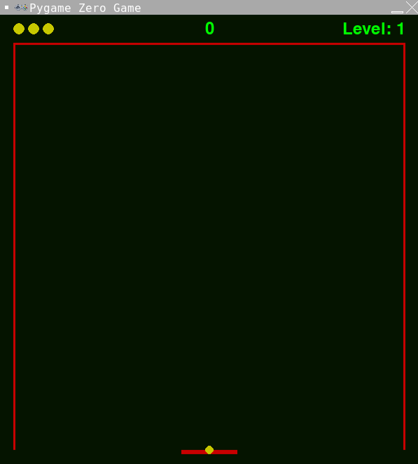
Experiment: Changing the look and speed of the ball
Just as the earlier sections allow the look and feel of the game to be changed by modifying values of the UPPERCASE variables, the ball can be changed too. Experiment with different values for the following variables:
BALL_RADIUS: 1, 3, 6, 10, 20, 50BALL_COLOUR: This will be a (red, green, blue) triplet.
Step 4: Serving the ball
The completed code for this step is available here.
In this step, we will add the code to serve the ball. This will also include the code which keeps the ball with the paddle before serving.
Place the following code before the call to pgzrun.go().
playing = False
serving = True
game_over = False
def start_game(dt):
global score, level, lives, playing, serving, game_over
if not playing and keyboard.space:
score = 0
level = 1
lives = STARTING_LIVES
playing = True
serving = True
game_over = False
setup_blocks()
def serve_ball(dt):
global serving, ball
if serving:
# If we are serving, keep the ball with the paddle.
ball.position = paddle.position
# If space is pressed, serve the ball
if keyboard.space:
serving = False
ball.serve()
update_funcs.append(start_game)
update_funcs.append(serve_ball)
Run your game and move the paddle. The ball should move with it. The final step is
to add the serving draw() code as follows.
def draw_serving(draw):
if serving:
draw.text(f"Level {level}",
center=(WIDTH / 2, HEIGHT / 2),
color=SCORE_COLOUR,
fontsize=72)
draw.text("Press space to serve",
center=(WIDTH / 2, HEIGHT * 3 / 4),
color=SCORE_COLOUR,
fontsize=36)
draw_funcs.append(draw_serving)
Run your game and make sure it works; it should look like the screen shot below.
Does the ball stay with the paddle when you move it left and right?
What happens when you press space to serve the ball?
You will get an error that starts: Traceback (most recent call last):
And finishes: NameError: name 'setup_blocks' is not defined
This is because there are currently no blocks setup in the game. This is what we will do in the next step.

Experiment: Changing the look of the level and serving text
The draw() function is where the text is drawn on the screen. The text is drawn in
the same colour as the score. Experiment with changing the colour and size of the two
pieces of text to find something you like.
You can also experiment with changing the position of the text.
Step 5: Adding blocks
The completed code for this step is available here.
In this step we will place the blocks on the screen. As we have done with both the paddle and ball
we will create a new Class called 'Block' to represent an individual block. With the Paddle and
Ball classes, there was only ever a single instance of each in the game. With Block it will be
different as there will be many instances of block. The Block class is a small simple class that
just displays itself in a static position. One unique property of a block is that it has a one in
five change chance of the Bounce() function returning true. We will make use of this in a later
step.
Place the following code before the call to pgzrun.go().
class Block:
def __init__(self, rect, colour, value):
self.rect = rect
self.colour = colour
self.value = value
@property
def bounding_box(self):
return self.rect
@property
def bounce(self):
return randint(0, 4) == 0
def draw(self, draw):
draw.filled_rect(self.bounding_box, self.colour)
Because we will always create the blocks in the same positions, we can calculate
those positions once at the start of the game and then reuse them. These positions
will be stored in the list variable block_rects and calculated in the function
setup_block_rects(). The blocks themselves will be stored in a list variable
called blocks and those blocks will be created in the function setup_blocks()
which will use the values we calculated in block_rects.
Place the following code before the call to pgzrun.go().
BLOCK_GAP = 5
BLOCK_COLUMNS = 10
BLOCK_HEIGHT = 14
BLOCK_COLOURS = [
(34, 67, 83),
(34, 67, 83),
(64, 67, 83),
(94, 67, 83),
(124, 67, 83),
(154, 67, 83),
(184, 67, 83),
(214, 67, 83),
(244, 67, 83),
(244, 67, 83),
]
BLOCK_AREA_WIDTH = WIDTH - (2 * MARGIN_WIDTH) - (2 * BORDER_WIDTH) - BLOCK_GAP
BLOCK_AREA_LEFT = MARGIN_WIDTH + BORDER_WIDTH + BLOCK_GAP
BLOCK_AREA_TOP = HEADER_HEIGHT + BORDER_WIDTH + BLOCK_GAP
BLOCK_AND_GAP_WIDTH = BLOCK_AREA_WIDTH / BLOCK_COLUMNS
BLOCK_WIDTH = BLOCK_AND_GAP_WIDTH - BLOCK_GAP
BLOCK_AND_GAP_HEIGHT = BLOCK_HEIGHT + BLOCK_GAP
block_rects = []
def setup_block_rects():
global block_rects
for x in range(BLOCK_COLUMNS):
block_rects.append([])
for y in range(len(BLOCK_COLOURS)):
left = BLOCK_AREA_LEFT + (BLOCK_AND_GAP_WIDTH * x)
top = BLOCK_AREA_TOP + (BLOCK_AND_GAP_HEIGHT * y)
rect = Rect(left, top, BLOCK_WIDTH, BLOCK_HEIGHT)
block_rects[x].append(rect)
blocks = []
def setup_blocks():
global blocks
blocks = []
for x in range(len(block_rects)):
for y in range(len(block_rects[x])):
rect = block_rects[x][y]
colour = BLOCK_COLOURS[y]
blocks.append(Block(rect, colour, 10 - y))
setup_block_rects()
setup_blocks()
def draw_blocks(draw):
for block in blocks:
block.draw(draw)
draw_funcs.append(draw_blocks)
Run your game and make sure it works; it should look like the screen shot below.
Serve the ball, what happens when the ball hits a block? Why do you think this might be?
What happens if the ball misses the paddle? Why do you think that might be?
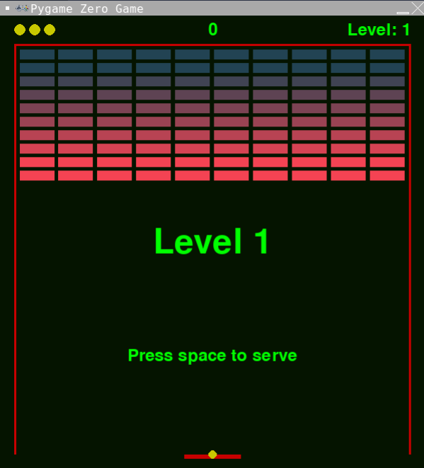
Experiment: Changing the number and look of the blocks
Just as the earlier sections allow the look and feel of the game to be changed by modifying values of the UPPERCASE variables, the number and size of the blocks can be changed too. Experiment with different values for the following variables:
BLOCK_GAP: 0, 1, 3, 5, 10, 20BLOCK_COLUMNS: 1, 2, 4, 10, 20, 100BLOCK_HEIGHT: 1, 2, 5, 10, 14, 30BLOCK_COLOURS: : This are all (red, green, blue) triplets.
Also, now the ball moves, experiment with changing the following variables:
BALL_SPEED_Y: 100, 300, 1000, 3000BALL_SPIN_X_MIN: 0, 50, 100, 200BALL_SPIN_X_MAX: 100, 200, 500, 1000
Step 6: Destroying the blocks
The completed code for this step is available here.
In this step, we will get the ball to destroy the blocks. We will write a new function
called check_for_collisions() that will do the checking for us as well as updating
the players score. Inside this new function a list called blocks_to_destroy is created.
That list is created using a very powerful Python technique called a list comprehension. Python list comprehensions
are efficient ways to create new lists. The list comprehension in check_for_collisions()
creates a new list containing the blocks whose bounding_box collides with the balls
bounding_box. For a further explanation of list comprehensions see here.
To add a little twist to the game, we don't want the ball to just fly through all of the blocks some blocks until it hits the back wall. We therefore bounce the ball if the block indicates it should bounce.
Place the following code before the call to pgzrun.go().
def check_for_collisions(dt):
global score, blocks
if ball.vy > 0 and ball.collide(paddle.bounding_box):
ball.bounce()
blocks_to_destroy = [block for block in blocks if ball.collide(block.bounding_box)]
if blocks_to_destroy:
for block in blocks_to_destroy:
score += block.value
blocks.remove(block)
if block.bounce:
ball.bounce()
update_funcs.append(check_for_collisions)
Run your game and make sure it works; it should look like the screen shot below.
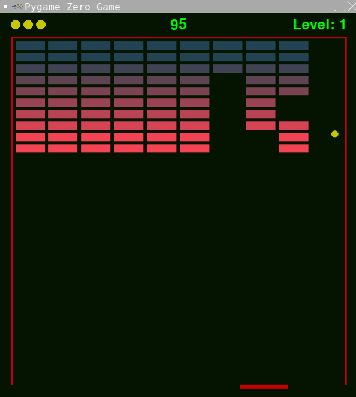
Step 7: Dropping the ball
The completed code for this step is available here.
In the previous step, the ball happily bounces around the screen for ever. The behaviour we want is for the ball the bounce along the bottom only if it makes contact with the paddle. If the ball does not make contact with the paddle, it should be considered dropped and the player loses a life.
Place the following code before the call to pgzrun.go().
def check_for_dropping_the_ball(dt):
global lives, playing, serving, game_over
if ball.y > (paddle.y + paddle.height + ball.radius):
ball.stop()
serving = True
lives -= 1
if lives <= 0:
game_over = True
playing = False
update_funcs.append(check_for_dropping_the_ball)
Run your game and make sure it works; it should look like the screen shot below.
What happens when you lose all of your lives?
To make it easier to clear the blocks, change the number of columns to 2 and
comment out some of the colours in the BLOCK_COLOURS variable. What happens
when you clear all of the blocks? Why do you think that is?
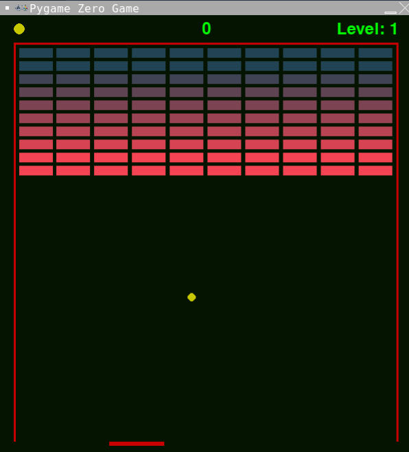
Step 8: Levels and lives
The completed code for this step is available here.
In this step, we will be checking for when the player has cleared all of the blocks and so a new level needs to be started. We will award the player an extra life for each level they clear. We will also add in a "GAME OVER" message.
Place the following new function before the call to pgzrun.go().
def check_for_new_level(dt):
global level, lives, playing, serving, blocks
if playing and len(blocks) == 0:
level += 1
lives += 1
serving = True
setup_blocks()
update_funcs.append(check_for_new_level)
Finally, add the code to draw the "GAME OVER" text.
def draw_game_over(draw):
if game_over:
draw.text("GAME OVER",
center=(WIDTH / 2, HEIGHT * 5 / 8),
color=SCORE_COLOUR,
fontsize=72)
draw_funcs.append(draw_game_over)
Run your game and make sure it works; it should look like the screen shot below.
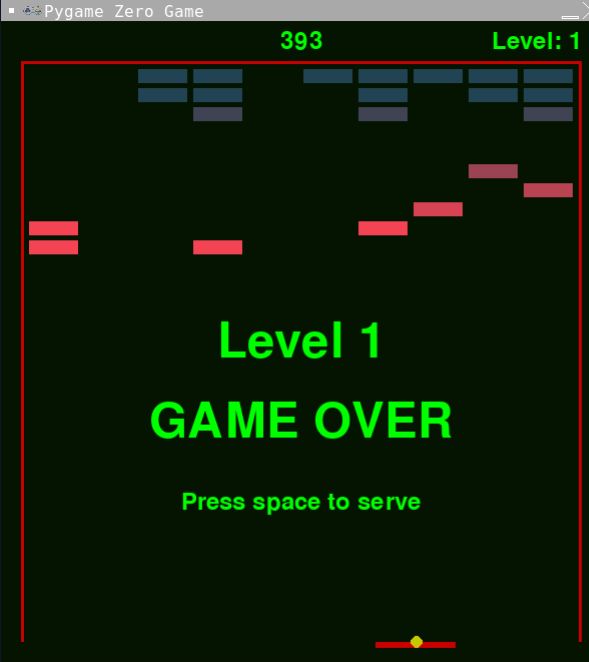
Experiment: Changing the look and position of the GAME OVER text
Experiment with the position, colour and size of the GAME OVER text to find something you like the look of.
Step 9: Add particle effects
The completed code for this step is available here.
In this step, we will be adding some particle effects when the blocks gets destroyed. Each particle effect will only last for a few seconds and is designed to add visual interest to the game. all the particle effects will have gravity applied to them which will make them tend towards the bottom of the screen over time. Two particle effects will be added:
ParticleScore: This will be a single particle containing the score value of the block destroyed. It will slowly fall towards the ground.ParticleExplosion: This will generate a preset number of dots in the colour of the block that are spread in random directions from the centre of the block before slowly falling towards the ground.
As well as the usual update() and draw() methods, all particle effects need an alive property
which will return True is the particle effect is still running or False is the particle effect
has completed. This property will be used by the game engine to remove completed particle effects.
Score particle effect
The first particle effect we will add is ParticleScore. We will also add the GRAVITY and
particles variables. The GRAVITY variable represent the gravity which applies to the particles
(in pixels per second). The particles list variable holds all particles effects currently
operating. The ParticleScore Class will draw just a single number. The direction that the
effect will take is chosen randomly (from a defined range) when an instance of ParticleScore
if created.
Place the following code before the call to pgzrun.go().
GRAVITY = 60
particles = []
PARTICLE_SCORE_MIN_VX = -60
PARTICLE_SCORE_MAX_VX = 60
PARTICLE_SCORE_MIN_VY = -30
PARTICLE_SCORE_MAX_VY = 60
class ParticleScore:
def __init__(self, pos, lifetime, value):
self.position = pos
self.left = lifetime
self.value = value
self.vx = randint(PARTICLE_SCORE_MIN_VX, PARTICLE_SCORE_MAX_VX)
self.vy = randint(PARTICLE_SCORE_MIN_VY, PARTICLE_SCORE_MAX_VY)
@property
def position(self):
return self.x, self.y
@position.setter
def position(self, pos):
self.x = pos[0]
self.y = pos[1]
@property
def alive(self):
return self.left > 0
def draw(self, draw):
draw.text(f"{self.value}",
center=self.position,
color=SCORE_COLOUR,
fontsize=24)
def update(self, dt):
self.left -= dt
self.vy += (GRAVITY * dt)
self.x += self.vx * dt
self.y += self.vy * dt
Explosion particle effect
The second particle effect that is to be added is PartcleExplosion. Whereas ParticleScore
displayed a single number, ParticleExplosion will display lots of pixels (configured by the
PARTICLE_EXPLOSION_PARTICLES variable). ParticleExplosion is a little more complicated
than ParticleScore due to having multiple pixels; though you have seen all coding techniques
used here in previous steps. Of particular note is the use of a list comprehension
in the update() method. For a further explanation of list comprehensions see here.
Place the following code below ParticleScore.
PARTICLE_EXPLOSION_MIN_VX = -90
PARTICLE_EXPLOSION_MAX_VX = 90
PARTICLE_EXPLOSION_MIN_VY = -90
PARTICLE_EXPLOSION_MAX_VY = 90
PARTICLE_EXPLOSION_PARTICLES = 30
class ParticleExplosion:
def __init__(self, pos, lifetime, colour):
self.left = lifetime
self.colour = colour
self.particles = [(pos[0], pos[1],
randint(PARTICLE_EXPLOSION_MIN_VX,
PARTICLE_EXPLOSION_MAX_VX),
randint(PARTICLE_EXPLOSION_MIN_VY,
PARTICLE_EXPLOSION_MAX_VY))
for _ in range(PARTICLE_EXPLOSION_PARTICLES)]
@property
def alive(self):
return self.left > 0
def draw(self, draw):
for particle in self.particles:
draw.filled_circle((particle[0], particle[1]), 1, self.colour)
def update(self, dt):
self.left -= dt
self.particles = [(particle[0] + (particle[2] * dt),
particle[1] + (particle[3] * dt), particle[2],
particle[3] + (GRAVITY * dt))
for particle in self.particles]
Hooking the particle effects in
For the particle effects to be added to the game engine, a small change needs to be made to the
check_for_collisions() method to add the effects when a block is destroyed. The two lines of
code that need to be added are given below. The values 2 and 4 represent the lifetime (think
duration) that each partcile effect will last for.
particles.append(ParticleScore(block.rect.center, 2, block.value))
particles.append(ParticleExplosion(block.rect.center, 4, block.colour))
Add those two lines of code to the check_for_collisions() function. The function
check_for_collisions() should now look like this:
def check_for_collisions(dt):
global score, blocks
blocks_to_destroy = [
block for block in blocks if ball.collide(block.bounding_box)
]
if blocks_to_destroy:
for block in blocks_to_destroy:
score += block.value
blocks.remove(block)
if block.bounce:
ball.bounce()
particles.append(ParticleScore(block.rect.center, 2, block.value))
particles.append(ParticleExplosion(block.rect.center, 4, block.colour))
All that remains now is to update and draw the particles. Place the following code
before the call to pgzrun.go().
def update_particles(dt):
global particles
for particle in particles:
particle.update(dt)
particles = [particle for particle in particles if particle.alive]
update_funcs.append(update_particles)
def draw_particles(draw):
for particle in particles:
particle.draw(draw)
draw_funcs.append(draw_particles)
Run your game and make sure it works; it should look like the screen shot below.
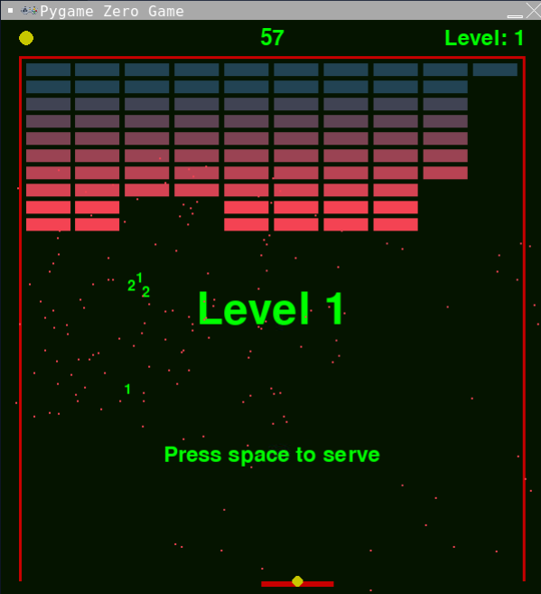
Experiment: Changing the particles
Experiment with changing the lifetimes of the particles. Unlike previous settings, the
lifetimes are not set through UPPERCASE variables. The lifetimes of the particles are
set in the check_for_collisions() function. See if you can find the values. Try values
from 1 through to 10 to see what effect it has.
There are other aspects of the PARTICLES that can be changed by modifying values of
UPPERCASE variables. The GRAVITY variable affects both particle effects but the other
variables affect only one of them. Experiment with different values for the following variables:
-
GRAVITY: 0, 10, 30, 60, 100, 200 -
PARTICLE_SCORE_MIN_VX: -200, -100, -60, 0, 60 PARTICLE_SCORE_MAX_VX: -30, 0, 30, 60, 100, 200, 1000PARTICLE_SCORE_MIN_VY: -200, -100, -60, -30, 0, 60-
PARTICLE_SCORE_MAX_VY: -30, 0, 30, 60, 100, 200, 1000 -
PARTICLE_EXPLOSION_MIN_VX: -200, -90, -60, 0, 60 PARTICLE_EXPLOSION_MAX_VX: -30, 0, 30, 60, 90, 200, 1000PARTICLE_EXPLOSION_MIN_VY: -200, -90, -60, -30, 0, 60PARTICLE_EXPLOSION_MAX_VY: -30, 0, 30, 60, 90, 200, 1000PARTICLE_EXPLOSION_PARTICLES: 1, 5, 30, 100, 1000
Extension: Add your own particle effects
Try adding your own particle effect. Using the ParticleScore as your template, design
a particle effect that writes a randomly selected word from a list. The following code
snippet is one way to randomly select a word from a list:
word = random.choice(["boom", "bang", "crash", "wallop"])
Step 10: Dropping bonuses
The completed code for this step is available here.
In this step, we will be adding bonuses that randomly get dropped when a block is destroyed. The steps to add bonuses to the game are very similar to those that were used to add particles. The primary difference between bonuses and particles is the bonuses float to the bottom of the screen where they can be collected by the paddle. If the bonuses are dropped then they are lost. There particle effects will be added:
BonusLives: If collected, the player will be awarded between 1 and 3 extra livesBonusPaddle: If collected, the paddle will double in size for a short period.BonusSpeed: If collected, the vertical speed of the ball will be reduced for a short period.
As well as the usual update() and draw() methods, all bonuses need an alive property
which will return True is the bonus has not been caught and is still on the screen or False
otherwise. This property will be used by the game engine to remove caught or dropped bonuses.
In addition, each bonus needs a catch() method which is called when the paddle makes contact
with the bonus. The catch() method allows the bonus to perform the appropriate action such as
give the player more lives, make the paddle bigger or slow the ball down.
Extra lives bonus
The first bonus effect is BonusLives. When created it will randomly choose how many lives to
award the player if caught.
Place the following code before the call to pgzrun.go().
BLACK = (0, 0, 0)
WHITE = (255, 255, 255)
BONUS_WIDTH = 60
BONUS_HEIGHT = 40
bonuses = []
class BonusLives:
def __init__(self, rect):
self.rect = copy(rect)
self.caught = False
self.lives = randint(1, 3)
@property
def bounding_box(self):
return self.rect
@property
def alive(self):
return not self.caught and self.rect.y < HEIGHT
def draw(self, draw):
draw.filled_rect(self.bounding_box, WHITE)
draw.text(f"lives x{self.lives}",
center=self.bounding_box.center,
color=BLACK,
fontsize=20)
def update(self, dt):
self.rect.y += GRAVITY * 4 * dt
def catch(self):
global lives
lives += self.lives
self.caught = True
Larger paddle bonus
The second bonus effect is BonusPaddle. This will make the paddle twice as wide
as usual for a short period of time. The duration the paddle is bigger is randomly
selected between 5 and 10 seconds in the catch() method.
Place the following code below BonusLives.
def reset_paddle():
paddle.width = PADDLE_WIDTH
class BonusPaddle:
def __init__(self, rect):
self.rect = copy(rect)
self.caught = False
@property
def bounding_box(self):
return self.rect
@property
def alive(self):
return not self.caught and self.rect.y < HEIGHT
def draw(self, draw):
draw.filled_rect(self.bounding_box, WHITE)
draw.text(f"paddle",
center=self.bounding_box.center,
color=BLACK,
fontsize=20)
def update(self, dt):
self.rect.y += GRAVITY * 4 * dt
def catch(self):
paddle.width = PADDLE_WIDTH * 2
clock.schedule_unique(reset_paddle, randint(5, 10))
self.caught = True
Slower ball bonus
The third bonus effect is BonusSpeed. This will make the balls vertical speed slower
for a short period of time. The duration the ball is slowwer is randomly selected between
10 and 20 seconds in the catch() method.
Place the following code below BonusPaddle.
def reset_ball():
if ball.vy > 0:
ball.vy = BALL_SPEED_Y
else:
ball.vy = -BALL_SPEED_Y
class BonusSpeed:
def __init__(self, rect):
self.rect = copy(rect)
self.caught = False
@property
def bounding_box(self):
return self.rect
@property
def alive(self):
return not self.caught and self.rect.y < HEIGHT
def draw(self, draw):
draw.filled_rect(self.bounding_box, WHITE)
draw.text(f"speed",
center=self.bounding_box.center,
color=BLACK,
fontsize=20)
def update(self, dt):
self.rect.y += GRAVITY * 4 * dt
def catch(self):
if ball.vy > 0:
ball.vy = BALL_SPEED_Y / 4
else:
ball.vy = -BALL_SPEED_Y / 4
clock.schedule_unique(reset_ball, randint(10, 20))
self.caught = True
Connecting it all up
Update the check_for_collisions() function by adding code to the end of it that both checks for
collisions with the bonuses and decides if a new bonus should be dropped or not. Only one bonus is
allowed to drop at any time and there is a 1 in 10 change of a bonus being granted. Your
check_for_collisions() function should now look like the following.
def check_for_collisions(dt):
global score, blocks
blocks_to_destroy = [block for block in blocks if ball.collide(block.bounding_box)]
if blocks_to_destroy:
for block in blocks_to_destroy:
score += block.value
block.destroy()
blocks.remove(block)
if block.bounce:
ball.bounce()
global bonuses
for bonus in bonuses:
if bonus.alive and bonus.bounding_box.colliderect(paddle.bounding_box):
bonus.catch()
if len(blocks_to_destroy) > 0 and len(bonuses) == 0 and randint(0, 9) == 0:
bounding_box = copy(blocks_to_destroy[0].bounding_box)
choice = randint(0, 2)
if choice == 0:
bonuses.append(BonusLives(bounding_box))
elif choice == 1:
bonuses.append(BonusPaddle(bounding_box))
else:
bonuses.append(BonusSpeed(bounding_box))
All that remains now is to update and draw the bonuses.
def update_bonuses(dt):
global bonuses
for bonus in bonuses:
bonus.update(dt)
bonuses = [bonus for bonus in bonuses if bonus.alive]
update_funcs.append(update_bonuses)
def draw_bonuses(draw):
for bonus in bonuses:
bonus.draw(draw)
draw_funcs.append(draw_bonuses)
Run your game and make sure it works; it should look like the screen shot below.
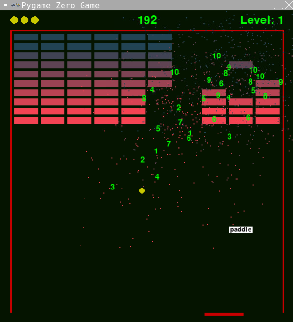
Experiment: Changing how often bonuses are dropped
Increase the number on bonuses that can be dropped at any one time from 1 to 2.
Increase how often bonuses get dropped from 1 in 10 to 1 in 5.
Change the minimum and maximum number of lives that can be awarded by BonusLives.
Set the minimum to 3 and maximum to 6.
Change the duration that the BonusPaddle and BonusBall bonuses last.
Step 11: Adding sound effects
The completed code for this step is available here.
Place the following code before the call to pgzrun.go().
Run your game and make sure it works; it should look like the screen shot below.

Step 12: Background music
The completed code for this step is available here.
Place the following code before the call to pgzrun.go().
Run your game and make sure it works; it should look like the screen shot below.

Step 13: Different levels
The completed code for this step is available here.
Place the following code before the call to pgzrun.go().
Run your game and make sure it works; it should look like the screen shot below.